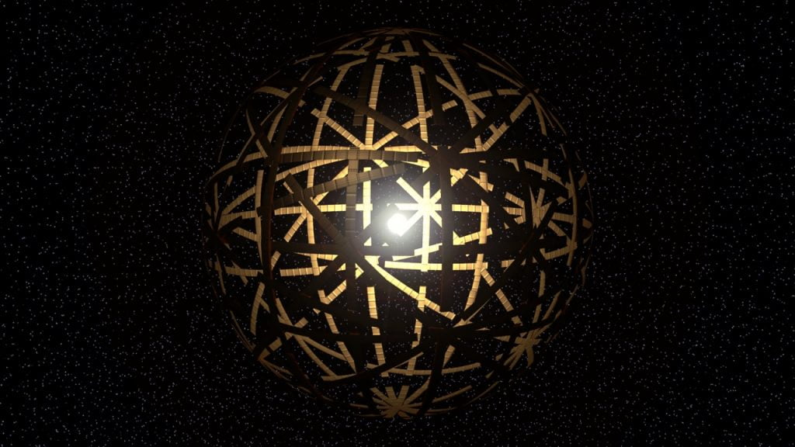

လတ်တလော ထုတ်ပြန်လိုက်တဲ့ သုတေသန စာတမ်း တစ်စောင်မှာ နည်းပညာ အဆင့် မြင့်တဲ့ အခြားကမ္ဘာက သက်ရှိ (ဂြိုလ်သား) တွေကို Black Hole တွင်းနက်ကြီးတွေ အနား တဝိုက်မှာ ရှာတွေ့နိုင် လိမ့်မယ်လို့ ဟောကိန်း ထုတ်လိုက်ပါတယ်။ ဒီ လို နည်းပညာ အဆင့်မြင့်တဲ့ သက်ရှိ အဖွဲ့အစည်းတွေ အနေနဲ့ စွမ်းအင် လိုအပ်ချက် အရမ်း မြင့်မားမှာ ဖြစ်လို့ သူတို့ရဲ့ လိုအပ်နေတဲ့ စွမ်းအင်တွေကို ဒီ အာကာသ တွင်းနက် ကြီးတွေကနေ ထုတ်ယူ သုံးစွဲ ကြရလိမ့်မယ် လို့ ဒီစာတမ်းက ဆိုပါတယ်။ ဒါ့ကြောင့် ဒီ သက်ရှိ အဖွဲ့အစည်းတွေကို ရှာချင်ရင် Black Hole တွေရဲ့ အနီးတဝိုက်မှာ သူတို့ရဲ့ စွမ်းအင်ထုတ်စက်တွေ စွမ်းအင်ထုတ် ယာဉ်တွေ ကို ရှာဖွေဖို့ လိုအပ်မယ်လို့ ဆိုပါတယ်။
ဒီ စာတမ်းမှာ တင်ပြထားတဲ့ စွမ်းအင်ထုတ် ကိရိယာ ကတော့ ဒိုင်ဆန် စက်ဝန်း (Dyson Sphere) လို့ ခေါ်တဲ့ စွမ်းအင်ထုတ် ကိရိယာပဲ ဖြစ်ပါတယ်။ ဒီ ကိရိယာကို ဖရီးမင်း ဒိုင်ဆန် (Freeman Dyson) ဆိုတဲ့ ရူပဗေဒ ပညာရှင်က အကြံပြုခဲ့တာ ဖြစ်ပါတယ်။ သူက အာကာသ ခရီးသွား အဆင့်မြင့် သက်ရှိတွေ အာကာသထဲ နယ်ပယ် ချဲ့ထွင်တဲ့ အခါ သာမန် စွမ်းအင်နဲ့ မလုံလောက်တော့တဲ့ အတွက် နေကနေ စွမ်းအင်ကို ဘယ်လို အကျိုးရှိရှိ ထုတ်ယူ သုံးစွဲ နိုင်မလဲ ဆိုတာကို စာတမ်း တင်ခဲ့တာပဲ ဖြစ်ပါတယ်။ သူ့အမည်ကို အစွဲပြုပြီး ဒီစနစ်ကိုလဲ ဒိုင်ဆန် စက်ဝန်းလို့ အမည် ပေးခဲ့တာပါ။
အခု ဒီစာတမ်းမှာတော့ အာကာသထဲကို ခရီးသွားပြီး နယ်ပယ်ချဲ့ထွင်နိုင်တဲ့ အဆင့်မြင့် သက်ရှိတွေ အနေနဲ့ လိုအပ်တဲ့ စွမ်းအင်တွေကို အာကာသ တွင်းနက်ကြီး (Black Hole) တွေ ဆီကနေ ထုတ်ယူ သုံးစွဲ ကြမှာ ဖြစ်တယ် လို့ ခန့်မှန်း တင်ပြထားတာ ဖြစ်ပါတယ်။ အဓိကကတော့ ကာဒါရှက်ဗ် (Kardashev scale) အဆင့် ၂ နဲ့ အဆင့် ၃ သက်ရှိအဖွဲ့အစည်းတွေရဲ့ စွမ်းအင် လိုအပ်ချက်အတွက် ပေးစွမ်းနိုင်မယ့် စွမ်းအင် ရင်းမြစ်တွေကို လေ့လာ တင်ပြထားတာပါ။ ဒီလို အဆင့်မြင့် သက်ရှိအဖွဲ့အစည်းတွေ အနေနဲ့ ကျွန်တော်တို့ နေက ပေးနိုင်တဲ့ စွမ်းအင်ထက် ပိုများတဲ့ စွမ်းအင်ကို လိုအပ်လို့ပါ။

“ဘလက်ဟိုးကြီး (Black Hole) တစ်ခုရဲ့ ပတ်ဝန်းကျင်မှာ ပတ်နေတဲ့ ဓါတ်ငွေ့တိမ်တိုက်ကွင်း (accretion disk)၊ ဗဟိုချက် (corona) နဲ့ မှုတ်ထုတ်လိုက်တဲ့ အရှိန်ပြင်း ဓါတ်ငွေ့ (relativistic jets) တွေ အားလုံးကနေ စွမ်းအင် ထုတ်လို့ ရပါတယ်တဲ့။ ဒီက ထုတ်လို့ရမယ့် စွမ်းအင်ဟာ အဆင့် ၂ ရှိတဲ့ သက်ရှိအဖွဲ့အစည်းအတွက် လုံလောက်မှု ရှိပါတယ်။ ကျွန်တော်တို့ရဲ့ တွက်ချက်မှုတွေ အရ ကြယ်သေပြီး ဖြစ်လာတဲ့ တွင်းနက်တွေဟာ လုံလောက်တဲ့ စွမ်းအင်ကို ထုတ်ပေးနိုင်မှာ ဖြစ်ပါတယ်။ ရေဒီယို သတ္တိကြွ လှိုင်းတွေ ထုတ်ပေးတာ နဲတဲ့ တွင်းနက်တွေ တောင် သာမန် ကြယ်တစ်ခုက ရမယ့် စွမ်းအင်ထက် အဆ ၁၀၀ လောက် များတဲ့ စွမ်းအင်ကို ပေးနိုင်မှာ ဖြစ်ပါတယ်။” လို့ ဒီစာတမ်းမှာ ပါဝင်တဲ့ သုတေသီ တစ်ဦးက ပြောပါတယ်။
ဒိုင်ဆန်ရဲ့ မူလစာတမ်းအရ ကြယ် (သို့) တွင်းနက်တွေရဲ့ ပါတ်ခြာလည်မှာ တည်ဆောက်ထားတဲ့ ဒိုင်ဆန် စက်ဝန်းက နေက စွမ်းအင်တွေကို စုပ်ယူလိုက်တဲ့ အခါ အနီအောက်ရောင်ခြည် လှိုင်းတချို့ အပြင်ကို ထွက်လာနိုင်ပါတယ်တဲ့။ ဒီ အနီအောက် ရောင်ခြည် လှိုင်းတွေကို ရှာဖွေနိုင်မယ်ဆိုရင် ဒီ ဒိုင်ဆန် စက်ဝန်းတွေကို ရှာတွေ့နိုင်မှာ ဖြစ်ပါတယ်။ ဒိုင်ဆန် စက်ဝန်းတွေ ရှိတဲ့နေရာဟာ ပြင်ပကမ္ဘာက သက်ရှိတွေ ရှိနေမယ့် နေရာပဲ ဖြစ်ပါတယ်။
ယခု သုတေသန စာတမ်းကို ထိုင်ဝမ် တက္ကသိုလ်က အာကာသ ရူပဗေဒ ပညာရှင်တွေက တင်ပြခဲ့တာ ဖြစ်ပါတယ်။ သူတို့က ဒိုင်ဆန်ရဲ့ မူလ ကြယ်ကနေ စွမ်းအင် ထုတ်မယ့် စနစ်ကနေ တဆင့်တက်ပြီး တွက်ချက်ကြည့် ကြတာပါ။ သူတို့က အကယ်လို့ ဒိုင်ဆန် စွမ်းအင်ထုတ်စက်တွေကို တွင်းနက်ကြီး တစ်ခုရဲ့ ပတ်ခြာလည်မှာ တည်ဆောက်ခဲ့မယ်ဆို ဘာဖြစ်လာမလဲ ဆိုတာကို တွက်ချက်ကြည့် ကြပါတယ်။ ဒီစက်တွေ တွင်းနက်ကြီး နားမှာ အလုပ်လုပ် ပါ့မလား။ သူတို့ကိုရော ကမ္ဘာကနေ ရှာဖွေထောက်လှမ်းလို့ ရနိုင်မလား။
တွင်းနက်တွေနဲ့ ပါတ်သက်လို့ ကျွန်တော်တို့ သိထားတာ တစ်ခုကတော့ သူတို့မှာ အလွန်အားကောင်းတဲ့ ဆွဲငင်အား ရှိကြတယ် ဆိုတာပဲ ဖြစ်ပါတယ်။ ဒီဆွဲအား စက်ကွင်းထဲ ဝင်လာတဲ့ အရာဝတ္ထုမှန်သမျှ လွတ်ထွက်မသွားအောင် ဆွဲထားနိုင်ပါတယ်။ နောက်ဆုံး အလင်းတောင် ဒီဆွဲအားစက်ကွင်းထဲ ဝင်သွားရင် ပြန်ထွက်လာလို့ မရတော့ပါဘူး။ ဒီဖြစ်စဉ်ကိုလဲကမ္ဘာပေါ်ကနေ လှမ်းပြီး ထောက်လှမ်းရှာဖွေလို့ ရပါတယ်။
ဒါဆို ဒီလို အရာဝတ္ထု မျိုးကနေ ဘယ်လိုလုပ်ပြီး စွမ်းအင်ထုတ်ဖို့ ဆိုတာ ဖြစ်နိုင်ပါ့မလဲလို့ တွေးစရာ ရှိပါတယ်။ ဒီထဲ ဝင်သွားရင် ဘာမှမှ ပြန်ထွက်မလာတော့ဘူး မဟုတ်လား။
ဒါပေမယ့် တွင်းနက်ကြီးတွေထဲက ဘာမှ ပြန်ထွက် မလာဘူး ဆိုတာ မဟုတ်ပါဘူး။ သူတို့ ရဲ့ အနားမှာလဲ စွမ်းအင် အမြောက်အများ ထွက်ရှိနေတဲ့ သဘာဝ ဖြစ်စဉ်တွေ ဖြစ်နေတာပါ။
ဒီစာတမ်းမှာ ဒီ သဘာဝ ဖြစ်စဉ်တွေကနေ စွမ်းအင် ထုတ်လို့ ရမရ တွက်ချက်ထားပါတယ်။ ပထမဆုံးက တွင်းနက်ကြီးထဲကို ဓါတ်ငွေ့တွေနဲ့ အခြား ဒြပ်ပစ္စည်းတွေ ဝင်ရောက်သွားတဲ့ အခါ ရေဝဲကြီးလို ခရုပတ် ပတ်ပြီး ဝင်သွားတာပါ။ ဒီ ရေဝဲလို ဖြစ်နေတာကြီးက ချပ်ပြားကြီးလို ပြားပြား ဝိုင်းဝိုင်း ကြီးပါ။ ဒီ အဝိုင်းကြီးကို Accretion disk လို့ ခေါ်ပါတယ်။ ဒီအထဲကို ဓါတ်ငွေ့တွေ ဝင်ရောက်သွားတဲ့ အခါ ဒီဂရီ စင်တီဂရိတ် သန်းနဲ့ချီပြီး ပူပြင်းလာပါတယ်။
နောက်တစ်ခုက ဟော့ကင်း ရေဒီယို သတ္တိကြွမှု (Hawking radiation) ပါ။ နာမည်ကျော် ရူပဗေဒ ပညာရှင်ကြီး စတီဖင် ဟော့ကင်း က ဟောကိန်း ထုတ်ခဲ့တဲ့ ရေဒီယို သတ္တိကြွမှု ဖြစ်ပါတယ်။ တွင်းနက်ထဲကို အမှုန်တွေ ကျရောက်သွားတဲ့ အခါ နယ်ခြားမျဉ်းဖြစ်တဲ့ Event Horizon မှာ ရေဒီယို သတ္တိကြွ အမှုန်တွေ ပြန်ထွက်လာပါတယ်။ အဲ့သည် အမှုန်တွေကို ဟော့ကင်း ရေဒီယို သတ္တိကြွမှု လို့ ခေါ်တာ ဖြစ်ပါတယ်။
နောက်တစ်ခုက တွင်းနက်ရဲ့ နယ်ခြားမျဉ်း (event horizon) ရဲ့ အပြင်ဖက်လေးမှာ ကပ်နေတဲ့ နေရာပဲ ဖြစ်ပါတယ်။ ဒီနေရာကို corona လို့ ခေါ်ပါတယ်။ ပြီးတော့ အရှိန်ပြင်းစွာ မှုတ်ထုတ်လိုက်တဲ့ ဓါတ်ငွေ့တွေလဲ တွင်းထဲကနေ ထွက်လာပါသေးတယ်။ ဒီနေရာတွေ အားလုံးကနေပြီး စွမ်းအင် ထုတ်လို့ ရပါတယ်တဲ့။

ဒါတင် မကသေးပါဘူး။ အကယ်လို့သာ ဒီ ဒိုင်ဆန်စက်ဝန်းဟာ လျှပ်စစ်သံလိုက်လှိုင်း စွမ်းအင်တင်မက အခြားသော စွမ်းအင်တွေကိုပါ ထုတ်ယူနိုင်မယ်ဆို စုစုပေါင်း ထုတ်ယူနိုင်မယ့် စွမ်းအင် ပမာဏဟာ အခု တွက်ထားတဲ့ ပမာဏ ထက် ၅ ဆ လောက်တောင် ပိုများပါလိမ့်မယ်။
ဒီလို စွမ်းအင် အမြောက်အများ ထုတ်လုပ်ပေးနိုင်မယ့် အဆောက်အဦကြီးကို လျှပ်စစ်သံလိုက်လှိုင်:(electromagnetic spectrum) မျိုးစုံကို အသုံးပြုပြီး ရှာဖွေ ထောက်လှမ်းနိုင်မှာ ဖြစ်ပါတယ်။ အပူချိန် များတဲ့ ဒိုင်ဆန် စက်ဝန်းတွေကို ခရမ်းလွန်ရောင်ခြည် လှိုင်းတွေ (Ultraviolet radiation) ကို ရှာဖွေ ဖမ်းယူပြီး ထောက်လှမ်းနိုင်မှာ ဖြစ်ပါတယ်။ နဲနဲ အေးတဲ့ ဒိုင်ဆန် စက်ဝန်းတွေကိုတော့ အနီအောက်ရောင်ခြည်လှိုင်းတွေ (Infrared ratiation) ရှာဖွေ ထောက်လှမ်းပြီး ရှာဖွေနိုင်မှာပါ။
ပြဿနာက တစ်ခုပဲ ရှိပါတယ်။ အဲ့တာကတော့ တွင်းနက်ကြီး ကိုယ်နှိုက်က အပေါ်က ပြောခဲ့တဲ့ အနီအောက် ရောင်ခြည်လှိုင်းတွေ၊ ခရမ်းလွန် ရောင်ခြည်လှိုင်းတွေ အမြောက်အများ ထုတ်လွှတ်နေတာပဲ ဖြစ်ပါတယ်။ ဒီ တွင်းနက်က ထွက်လာတဲ့ အနီအောက်ရောင်ခြည်နဲ့ ခရမ်းလွန် ရောင်ခြည်တွေနဲ့ ဒိုင်ဆန်စက်ဝန်းကနေ ထုတ်လွှတ်ပေးမယ့် ရောင်ခြည်တွေ ဘယ်လိုခွဲမလဲ ဆိုတဲ့ ပြဿနာပဲ ဖြစ်ပါတယ်။
ဒီစာတမ်းကို တင်တဲ့ သုတေသီတွေကတော့ အခြား နည်းလမ်းတွေနဲ့ ပေါင်းစပ် သုံးစွဲမယ် ဆိုရင်တော့ ဒိုင်ဆန်စက်ဝန်းတွေကို ရှာဖွေဖို့ ဖြစ်နိုင်ခြေ ရှိတယ်လို့ တင်ပြထားပါတယ် ခင်ဗျာ။
Reference: Dyson Spheres Around Black Holes Could Reveal Alien Civilizations, Scientists Say